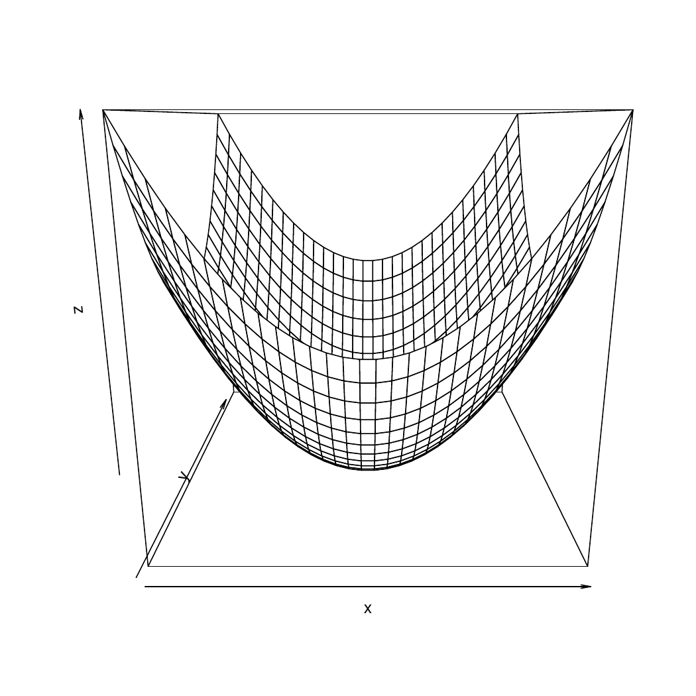
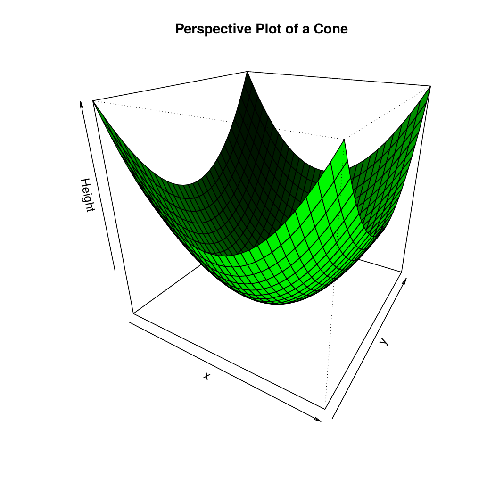
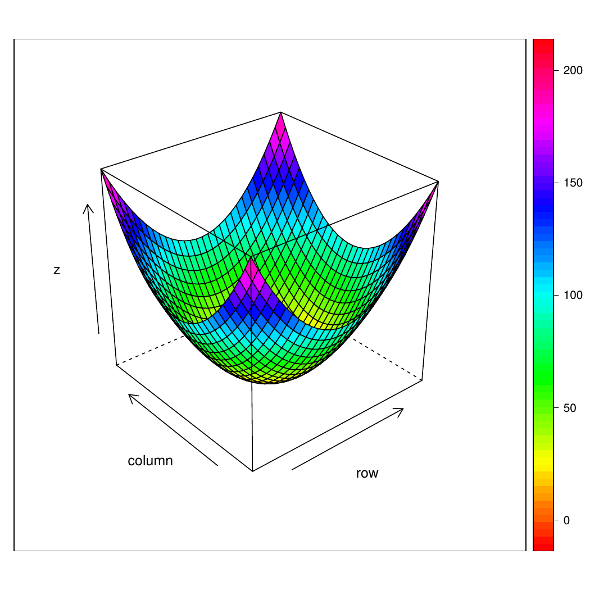

There are many functions in R programming for creating 3D plots. In this section, we will discuss on the persp() function which can be used to create 3D surfaces in perspective view.
Syntax
persp(x, y, z)x and y are vectors defining the location along x- and y-axis.
The height of the surface (z-axis) will be in the matrix z.
Example:
fdejong <- function (x, y) {
return (x^2 + y^2)
}
x <- seq(-10, 10, length= 30)
y <- x
z <- outer(x, y, fdejong)
z[is.na(z)] <- 1
persp(x, y, z,)
Result -
We can add a title to our plot with the parameter main.
Similarly, xlab, ylab and zlab can be used to label the three axes.
We can define the viewing direction using parameters theta and phi.
By default theta, azimuthal direction, is 0 and phi, colatitude direction, is 15.
Coloring of the plot is done with parameter col.
Similarly, we can add shading with the parameter shade.
fdejong <- function (x, y) {
return (x^2 + y^2)
}
x <- seq(-10, 10, length= 30)
y <- x
z <- outer(x, y, fdejong)
z[is.na(z)] <- 1
persp(x, y, z,
main="Perspective Plot of a Cone",
zlab = "Height",
theta = 31, phi = 25,
col = "green", shade = 0.8)
Result -

You can also use the Lattice wireframe function.
fdejong <- function (x, y) { return (x^2 + y^2) } x <- seq(-10, 10, length= 30) y <- x z <- outer(x, y, fdejong) z[is.na(z)] <- 1 require(lattice) wireframe(z, drape=T, col.regions=rainbow(100))
Result-
